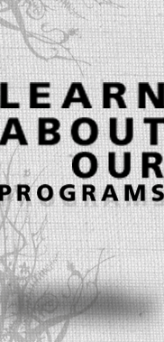
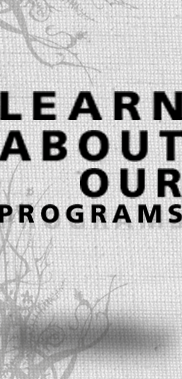

03/01/2009
We just redesigned our website. Let us know what you think. Thanks for coming!
What is Restore's purpose?
Aiming to offer the first residential facility for women escaping enslavement by the sex trade in New York, Restore hopes to provide a long-term recovery program in New York City to women who have been victimized by the sex trade through trafficking and prostitution. The ultimate benefit of this initiative is to provide hope, healing, ongoing support and the alleviation of poverty to an extremely traumatized and greatly underserved population.
Mission Statement
Restore is a Christian non-profit organization serving women enslaved by the sex trade by providing safe housing and specialized services to restore their physical, emotional, and spiritual health.
The Underground Sex Trade
Prostitution and sex trafficking are rampant in New York City. According to the United States Department of State, New York City's JFK airport is a major port of entry and transit point for trafficking of persons. The sex industries in Manhattan, Brooklyn, Bronx, and Queens range from street prostitution to strip clubs, peep booth shows, massage parlors, bars, private apartments, and escort services. Contrary to popular belief, a woman does not simply decide to be a prostitute. Rather, she often finds herself in this situation as a result of economic deprivation, coercion of some sort and a history of sexual abuse.
Victims of prostitution and sex trafficking are vulnerable to succumbing to a host of psychological problems and physical ills, such as acute anxiety, depression, suicidality, early pregnancies, forced abortions, sexually transmitted infections and reproductive diseases (ECPAT-USA, 2002).
While many women may want to escape this life, there are few resources that would enable them to do so. As a result, there is a great need for effective services for prostituted and trafficked women in New York City. Currently, there is not a single Christian or secular organization holistically serving this population in Manhattan or the surrounding boroughs. There is no residential haven specifically for women escaping the sex industry.
While organizations exist in New York City that are working hard to end trafficking and prostitution of women and youth, none is focused on providing long-term aftercare services to these women such as shelter, counseling, job training, and a way out of prostitution. Rather, most of the current efforts are directed toward providing legal services and advocacy with New York City and State.
Email
info@restorenyc.org
Mailing Address
Restore NYC, Inc.
c/o Hope for New York
1359 Broadway
Suite 410
New York, NY 10018.
Restore is a 501(c)3 not-for-profit organization. All donations are tax-deductible.
We also accept donations by U.S. mail at the following address:
Restore NYC, Inc.
c/o Hope for New York
1359 Broadway
Suite 410
New York, NY 10018.
Please include your name, address, and phone number so that we may acknowledge andsend you a receipt your gift for your contribution.
Please note that our volunteer slots are limited, as Restore is just becoming operational and our program is in the beginning stages of development. In addition, some volunteer opportunities will require a screening/interview process.
If you would like to be added to our volunteer database, please email info@resorenyc.org with "Volunteer" in the subject line.
For volunteer opportunities with accounting, please contact Jaymin Berg at jayminberg@yahoo.com
As for volunteer opportunities with the mentoring program, a volunteer will be matched with a program participant to assist with basic life skills assistance and support, such as instructing a participant on how to use the subway system, create a grocery list and budget, and accompanying participants to doctor appointments.
As for volunteer opportunities with prayer, if you have a desire to pray for the ministry of Restore, you can be added to our volunteer monthly email list by contacting ellep79@gmail.com. Restore also organizes prayer walks periodically throughout the city. To receive information about prayer walking, please email info@restorenyc.org with "Prayer Walking" in the subject line.
As for volunteer opportunities wit recreational outings, groups of volunteers will assist in organizing and leading various outings and recreational activities for participants, such as visits to the museum, trips to the movies, knitting circles, and much more.
Lastly, for volunteer opportunities with workshop instruction, volunteers can lead a class or a series of classes for participants on a variety of topics related to life skills, health and nutrition, job development, and parenting, just to name a few.
The idea for Restore began in the spring of 2004 when three friends from New York City felt called to find practical ways to serve and help victims of sex trafficking in the city. The following August, Restore's founders began training in Vancouver, Canada with Servants Anonymous World Services, an organization with a track record of success serving this population. In 2006, Restore was granted 501(c)(3) status by the Internal Revenue Service and subsequently was able to begin fundraising. In 2007, the Board was expanded to seven directors, and several successful fundraising events were held. The Board hired an Executive Director in 2008. The Board's primary focus for 2009 is to ensure the successful pilot of its case management program and raise financial resources so that we will be able to secure our own residence in 2010, in addition to other initiatives including developing Restore's operational infrastructure, program development, and Board development.
Restore is extremely excited to report that we are currently collaborating with the New York Asian Women's Center, a long-established, New York-based not-for-profit organization that for over 25 years has been helping battered women overcome domestic violence and govern their own lives, free of abuse. Restore's plan is to partner with this organization's new special initiative called "Project Free" to serve victims of human trafficking. This collaboration will allow Restore to begin assisting the NYAWC with case management and other support services (ESL, vocational training and job placement, recreational activities, etc.) in the winter of 2008. Restore aims to begin piloting our residential program under the NYAWC by fall of 2009.
Restore aims to provide a home to women escaping the sex industry is the most treasured and primary aspect of our program. When a woman escapes prostitution or trafficking, she is immediately in need of safe housing. In addition to the fundamental provision of food, housing and clothing, Restore's program is unique for four specific reasons: (1) accountability, (2) spiritual guidance, (3) modeling healthy daily living and (4) total reintegration back into society.
The accountability provided by Restore will hold each woman accountable for the goals that she and Restore staff and volunteers have agreed upon together in working towards her total restoration. The gap in services for sex trafficked women currently in the New York City is not only the lack of housing specific for this population, but an overarching umbrella organization that holds trafficked women accountable to their goals as well as streamlining the services provided.
The spiritual component is a vital and integral part of Restore providing total restoration to these women. We believe that Jesus is the ultimate healer. The women will be invited to receive the healing of Christ, though we will not mandate that participants practice Christian disciplines, specifically, attending Bible Studies and 12-Step Spiritual Recovery Groups offered in the evenings and weekends by staff, Live-In Servants, Board members and volunteers. Staff and Board members have full legal right to pray with and over participants when verbal permission is granted by the participant. The women in the program will also be invited to church on Sundays with Live-In Servants and volunteers, preferably to a church that holds services in the native language of the participant.
Modeling healthy daily living is a day-to-day learning and growth process whereby the participants will learn and see firsthand what it means to live in Christian community. Participants will learn the principles of developing a daily structure/routine that incorporates sharing, conflict resolution, daily personal and household cleaning, maintaining a curfew and learning mutual trust and respect for others.
The goal for each woman in the program is for her to be fully reintegrated into society and to be completely self-sufficient after 3 to 6 years in the program. The increased and multiple needs of this population (drug addiction, post-traumatic stress disorder, disease, cutting, depression, AIDS, etc.) require a higher concentration of care over a longer period of time. Restore is committed to walking alongside each woman during her difficult road to recovery.
The programs and services Restore seeks to provide will include:
If you have a question that still isn't answered pllease contact us at info@restorenyc.org and we will respond to your query as soon as possible.
Books
Batstone, David. Not For Sale: The Return of the Global Slave Trade and How We Can Fight It. San Francisco: HarperCollins, 2007.
Bales, Kevin. Disposable People: New Slavery in the Global Economy. Berkeley: University of California Press, 1999.
Farley, Melissa, ed. Prostitution, Trafficking, and Traumatic Stress. Binghamton: The Haworth Maltreatment & Trauma Press, 2003.
Haugen, Gary A. The Good News About Injustice: A Witness of Courage in a Hurting World. Downers Grove: InterVarsity Press, 1999.
Mam, Somaly. The Road to Lost Innocence. New York: Random House, 2008.
Reports & Articles
U. S. Department of State. "Trafficking in Persons Report--2007." Released by The Office to Monitor and Combat the Trafficking in Persons, June 12, 2007. website
Lustig, Jessica. "The 13-Year-Old Prostitute – Working Girl or Sex Slave?" New York Magazine, April 2, 2007. website
Landesman, Peter. "The Girls Next Door." The New York Times Magazine Jan. 25, 2004 website
Documentaries, Films and News Coverage
Born into Brothels
This documentary film traces the lives of several children in the Red Light district of India. The filmmaker, Zana Briski, is a New York-based photographer who teaches a photography class to the children and attempts to enroll them in boarding schools in order to give them the opportunity for a better future. Winner of the 2005 Academy Award for Best Documentary Film, Born Into Brothels, was produced and directed by New York based filmmakers Ross Kauffman and Zana Briski.
Website
Call & Response
Through the power of music, this feature documentary film combats the world’s 27 million dirtiest secrets: there are more slaves today than ever before in human history. Luminaries on the issue such as Cornel West, Madeleine Albright, Daryl Hannah, Julia Ormond, Ashley Judd, Nicholas Kristof, among others offer firsthand accounts of this 21st century trade. Performances from Grammy-winning and critically acclaimed artists including Moby, Natasha Bedingfield, Cold War Kids, Matisyahu, Imogen Heap, Talib Kweli, Five For Fighting, Switchfoot, members of Nickel Creek and Tom Petty’s Heartbreakers, and Rocco Deluca move this chilling information into inspiration for stopping it.
Website
Fields of Mudan
In a harrowing fictional account based on real conditions, the 2006 Academy Awards qualifier written and directed by an FSU film student tells the story of Mudan, a young Chinese girl forced into an Asian underworld of child prostitution and modern-day slavery by a brutal brothel owner. The child's only hope is her dream of a new life in America with her mother.
Contact: Kathy Barber, (850) 645-4840; kbarber@film.fsu.edu
Human Trafficking
Mira Sorvino and Donald Sutherland star in this thrilling movie that traces the routes of several women and children as they are bought and sold by international traffickers. This dramatic film, a Lifetime Television's original movie, illustrates several forms of human trafficking, particularly the sexual exploitation of women and young children. It captures the stories of victims, perpetrators, and those working to stop trafficking.
Contact: Lauren Frederick, frederick@lifetimetv.com
Lilja 4-ever
Lilja 4-Ever, a Swedish film released in 2003 depicting the struggles of Lilja (Okshana Akinshina), a 16-year-old girl living in an unidentified ex-Soviet Republic. Her mother abandons her in the slums of the city to move to the U.S. and Lilja turns to prostitution as a way to support herself. When Swedish businessman Andrei (Panel Ponomaryov) appears and promises to save Lilja from the slums, her situation appears to be improving, but it is only the beginning of the problems she will face.
Contact: Maria Smith at msmith4@nd.edu
Sex Slaves
Frontline presents a unique hidden camera look at the world of sexual slavery, talking with traffickers and their victims, and exposing the government indifference that allows the abuses to continue virtually unchecked. “Sex Slaves” also follows the remarkable journey of one man determined to find his trafficked wife by posing as a trafficker himself to buy back her freedom.
Website
Very Young Girls
Using vérité and intimate interviews, this expose of human trafficking follows thirteen and fourteen year-old American girls as they are seduced, abused, and sold on New York’s streets by pimps, and treated as adult criminals by police. The film identifies hope for these girls in the organization GEMS (Girls Education and Mentoring Services), a recovery center founded and run by Rachel Lloyd, herself a survivor of sexual exploitation. This unprecedented access to girls and pimps will change the way law enforcement, the media, and society as a whole look at sexual exploitation, street prostitution and human trafficking that is happening right in our own backyard.
Website
Resourceful Websites